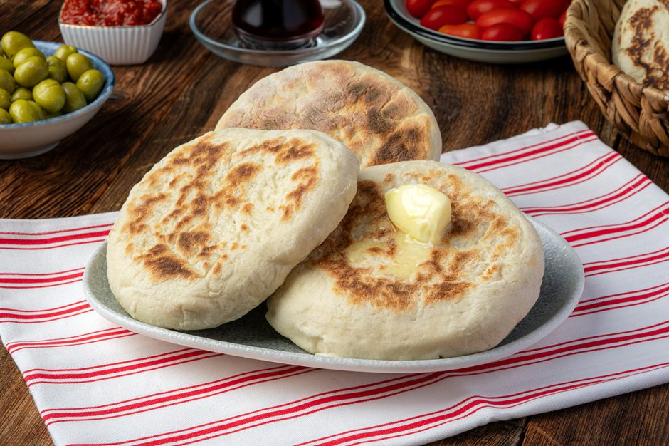

<- Return to Main Page
Bazlama

Description
Bazlama is a simple and delicious village bread that I learned to prepare after moving to Turkey.
Normally it is cooked in an outdoor oven but it works just as well on the stove top. It's best served warm.
Ingredients
- 1 (.25 ounce) package active dry yeast
- 1 tablespoon white sugar
- 1 tablespoon salt
- 1 ½ cups warm water (110 degrees F/45 degrees C)
- ½ cup Greek-style yogurt
- 4 cups all-purpose flour
Directions
- Dissolve the yeast, sugar, and salt in the warm water. Add the water and yogurt to the flour and mix well. The dough will be soft but not sticky. Turn the dough out onto a lightly floured surface and shape it into a ball. Cover the dough with a damp cloth and allow it to rise at room temperature for 3 hours.
- Cut the dough into four portions. Shape the dough into rounds and flatten each round as though you're making pizza dough. Cover the rounds with a damp cloth and let the dough rest for 15 minutes.
- Heat a cast iron skillet or griddle over medium-high heat. Place one dough round in the skillet and bake until brown spots appear on the bottom, about 1 minute. Flip the bread and bake for an additional minute. Remove the bread and wrap it in a clean kitchen towel to keep warm.
- Repeat with the remaining dough rounds. Store any leftover flatbreads in an airtight container.